Introduction
Vote is the base of the democracy
Elections belong to the people. It's their decision. If they decide to turn their back on the fire and burn their behinds, then they will just have to sit on their blisters.
Abraham Lincoln

The problem
Giving power on an intermediary to process the votes is a threat in case of malicious actor. Even with electronic voting system, there are not clear proof of frauds but still remain some questions (article here).
Can we leverage the decentralized feature of blockchain to solve the intermediary problem ? It what TzVote claims to provide
Solution
TzVote helps you deploy your own poll on a smart contract and gives you a simple website to interact with it
Flavours
There are different ways to create a poll, so we decided to create template for each particular use cases. First, here are the criteria to consider :
- question count : how many question on the poll ?
- option count : how many options on the answer ?
- votes choices count : only once or multiple answers
- voting power : how is calculated the end result
- dates : dates to consider
- censorship resistant : what is the level of decentralization of your poll ?
- privacy : does the poll include hidden ballot and preserve anonymity ?
Here are the available templates :
| name | #questions | #options | #choices | voting power | dates | censorship resistant | privacy |
|---|---|---|---|---|---|---|---|
| permissioned vote | 1 | n | 1 | 1 allowed address = 1 vote | from, to | poll creator choose voters | no |
| baker vote | 1 | n | 1 | Tezos baker total stake | Tezos voting period | yes | no |
Next developments
- bring complete anonymity, ballots might be hidden (to avoid physical threats)
- bring more templates : Borda, Samarkand
- Proof of Humanity
Links
-
TEZOS COMMUNITY DAPP (iOS) Soon
User Guide
Login
Login and logout
Connection to TzCommunity backend
Create a poll
Create either :
- permissioned poll
- baker poll
Manage a poll (Details & Results)
Manage a poll :
- See details and change parameters
- See results
Vote on a poll
Vote and confirm with your wallet
Search
Search options
Share a poll
Share with community
Login
On the Home page you have a login button
Click on it
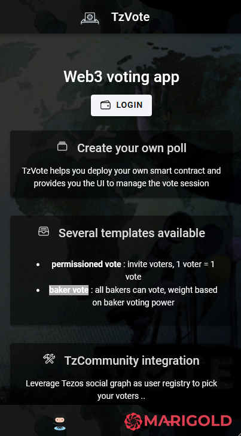
Select your preferred wallet, your account
A second popup will ask you to sign a payload, once done you will be logged on TzCommunity backend and all Tezos addresses will be resolve to human-readable social account aliases (only if you have the right to see it)
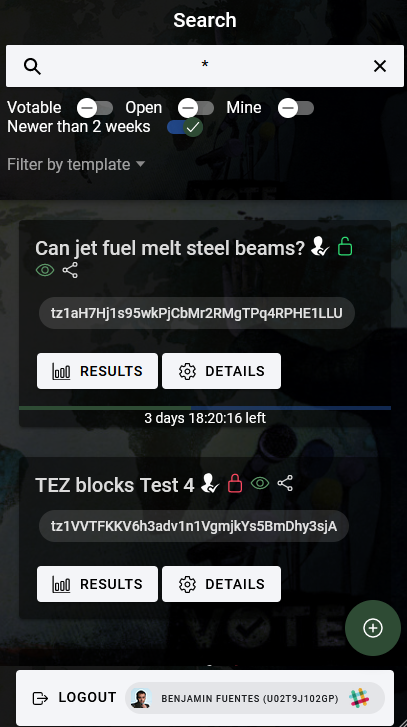
If you have linked your social account on TzCommunity, your profile will appear on the Logout bottom button and everywhere else on the application. I recommend you to link your account with your tz1 address to make it more friendly, it is totally free and more UX friendly.
Logout
Click on the bottom button LOGOUT
Create a poll
Click on the bottom-right floating button to display the voting templates
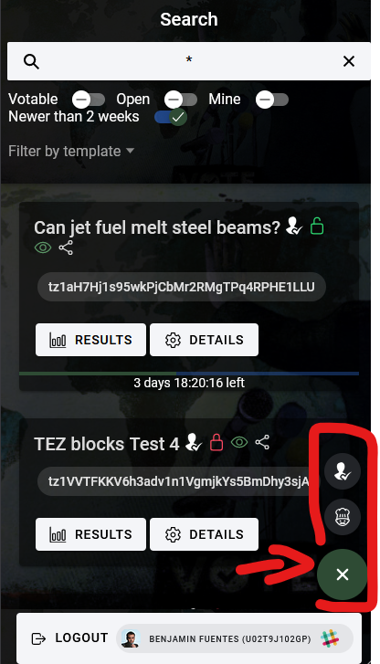
Create a permissioned poll
Permissioned poll creates a poll with allowed voters. Only the creator of the poll can choose who can vote
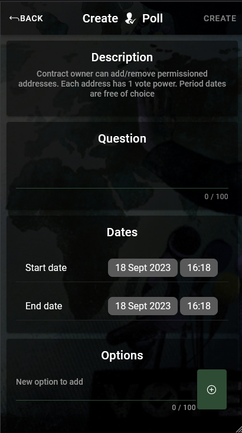
- Add a question
- Add dates from and to
- Add at minimum 1 option
- Add voters :
- individual voter : add an address, one by one
- bakers delegatees : add all baker delegatees from a baker address
- Import CSV file : add all addresses from the CSV (comma separated, only 1 column)
- add my delegatees (baker only) : import all my delegatees
Once all fields are filled, you can click on top-right CREATE button
Create a baker poll
Anyone can create a baker poll but only bakers will be allowed to vote on it. For the final result, ballot weight is relative to baker's total stake
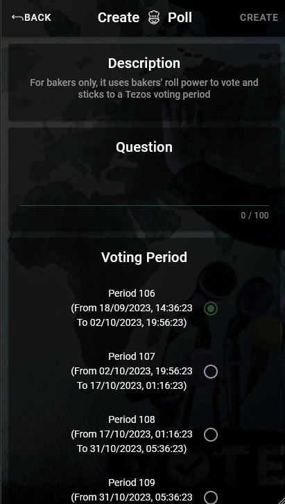
- Add a question
- Select a Tezos voting period. Your poll will stick to it, so the end date is an estimation
- Add at minimum 1 option
Once all fields are filled, you can click on top-right CREATE button
You don't need to specified bakers addresses, it is automatically filtered by the smart contract in case voter is not a baker
Manage a poll
Each poll has a dedicated page / url for management
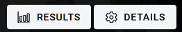
Details
You can see here the details of the poll, and you can vote (it is the right time)
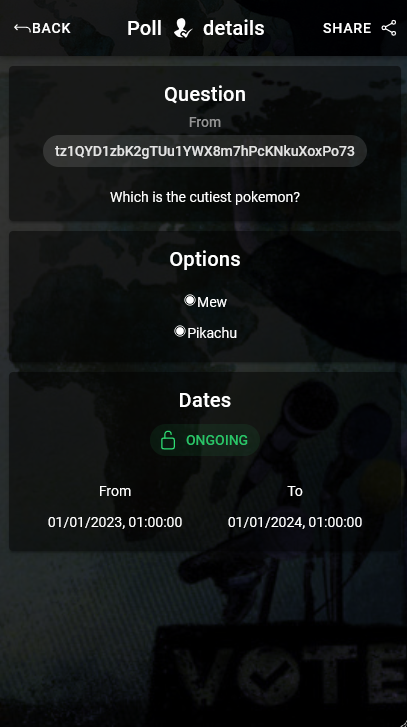
You can also share the poll (top-right button)
It your are the creator of poll, you can also manage some settings, like adding or removing voters for example
Results
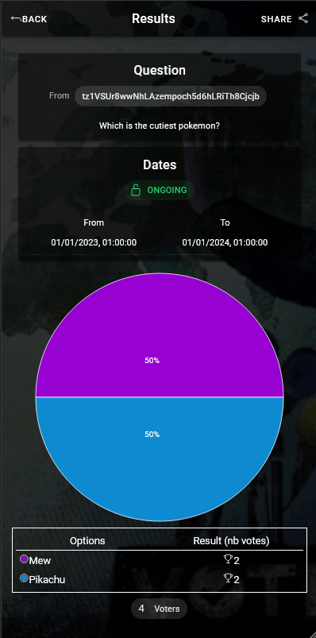
Vote on a poll
Votable poll have a VOTE button
Tips : Filter with Votable to find votable polls faster
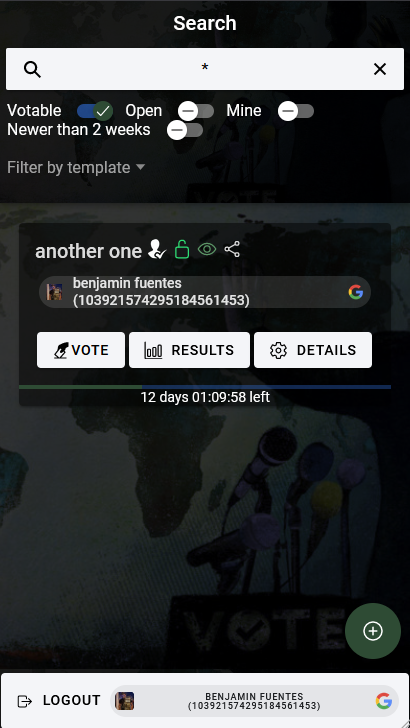
Clikc on the button, to open the choices
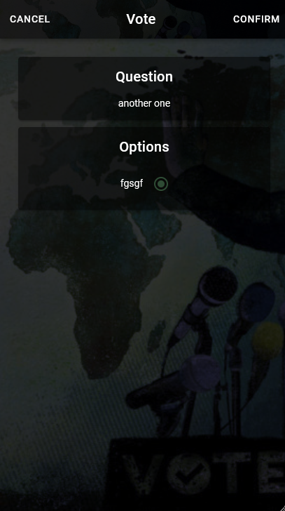
Select an option to answer and click on CONFIRM
Confirm the transaction with your wallet
Search
Filters
Use top filter to faster search
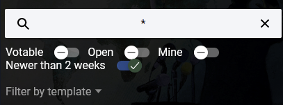
- Votable : filter only votable polls
- Open : filter only open polls. It means that voting time is active. On the contrary, polls in the future or with end date passed are locked
- Mine : filter only poll where I am the creator
- Filter by template : by template type, baker or permissioned
Icons
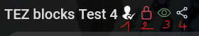
- template type : baker or permissioned
- status : locked or ongoing
- tzkt link : see the poll on an indexer
- share button : shortcut to share the poll to someone
Share a poll
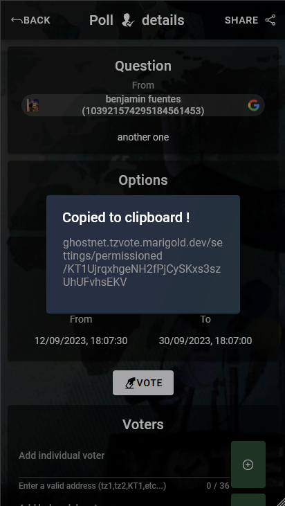
If you click on the share button :
- web version : the url link will be copied to your clipboard
- mobile version : a contextual menu will popup to select the application though with you will share this link
Contributors
Made with love by Marigold team